A GIF should play like a GIF
One proposal in three parts and eight decisions, from the owner 2026-09-02:
“the gif shuld show a play/pause overlay and there should be a setting in use rproifle to
play gifs by default or not” — then, on a second post, “not just tha tpost, but
that TYPE of post” — and then “additionally we should have an advanced setting
checkbox to show or hide alt txt with hide as default”.
Plan: plans/2026-09-02-plan-gif-embeds.md.
Every frame here is a capture of the engine (MOCKS.md P1): Current is
main at 05101a9, Proposed is claude/gif-embeds at
2dd9bc5, both by scripts/mock-snaps.mjs, in the default skin (rule 4),
at 390×844 and 1280×900. Captures live in plans/mocks/snaps/gif-embeds/.
The population is e2e/harness/mock-gif.mjs, and the two GIF records in it are the
owner's OWN, verbatim from the network — so js/gif.js parses real klipy uris
here rather than something shaped like one.
What is wrong today
Bluesky's GIF button attaches the animation as an ordinary
app.bsky.embed.external. Forage believes the costume: it draws the frozen JPEG
thumbnail, the title, the description and the host, with a link out. Nothing moves, and
nothing can be made to move.
The second line is the sting. Bluesky's composer hides alt text
inside that description behind a prefix whose case carries the meaning
(social-app/src/lib/gif-alt-text.ts):
"Alt: " is alt a person wrote; "ALT: " is the GIF's own title
auto-filled. Both reported posts carry the all-caps form, so the card printed the same eight
words twice — and main prints the prefix too.
| The uri, measured 2026-09-02 | bytes | type | CORS |
|---|---|---|---|
the .gif itself | 8,773,093 | image/gif | * |
…/8pcPaPB1Eow6fc.mp4 (the mp4= slug) | 1,458,814 | video/mp4 | * |
…/0Ds0ULMJw0vWjEZ6NMLN.webm (the webm= slug) | 953,992 | video/webm | * |
The query string is not decoration: hh/ww are the true
dimensions and mp4=/webm= are filename slugs for the same animation as
video. Playing the .gif costs 9.2× the webm, and
static.klipy.com — the host already in the record — serves all three.
Open decisions
| # | Decision | Proposed | Status |
|---|---|---|---|
| 1 | Does a GIF card keep its title and host? | Yes. bsky.app hides them (hideDetails) and shows the GIF alone. You asked for a player and a setting, not for the card to lose its name — and with alt hidden the duplication is already gone. |
open |
| 2 | Does autoplay default on or off? | The device answers. prefers-reduced-motion: reduce → off, otherwise on. An explicit choice then wins both ways. DESIGN.md § Foundations: defaults from the device, choices from the person. |
open |
| 3 | Alt text default | Hidden, no device signal. | settled by you |
| 4 | Where the two switches live | Autoplay with the other reading preferences on /me; alt text behind Advanced, beside Browse Hashtags. |
settled by you |
| 5 | Does the alt setting cover pictures too, or only GIFs? | Pictures too — a visible caption under a photo, which forage has never drawn. An ordinary link card's og:description is untouched in both states: an article summary is not alt text. |
settled by you |
| 6 | Is the whole surface the play/pause control, or a small button? | The whole surface. It is the gesture every other GIF a reader has met uses, and the 44px floor stops being a question at stage size. | open |
| 7 | Tenor's cheaper video form | Built, after the probe. Two independent real ids, against tenor's OWN host: Zc-ZTPzlEHo gif 66,865 B → webm 37,761 / mp4 20,255 (3.3×); r2ZObFlQ5I4 gif 4,160,427 B → webm 79,370 / mp4 77,723 (52×). Both 200, CORS * — so no proxy, as with klipy. forage requires the AAAAC code to be a suffix, stricter than social-app's first-match replace, so an id that merely contains it falls back to the image rather than to a 404. |
done v2 |
| 8 | Whose CDN serves klipy's video? | klipy's own. social-app proxies through k.gifs.bsky.app; both answer with identical bytes and open CORS, and the origin host is already in the record — so reading a post trusts nobody new. |
open |
1 · The reported post, where it was reported — on a reply
Defaults in both columns: autoplay on, alt text hidden. Current has no control and
no badge, and prints Alt: … with the prefix intact.

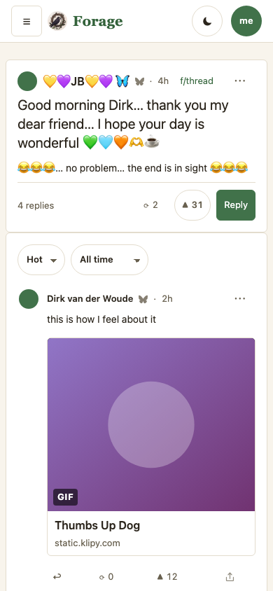

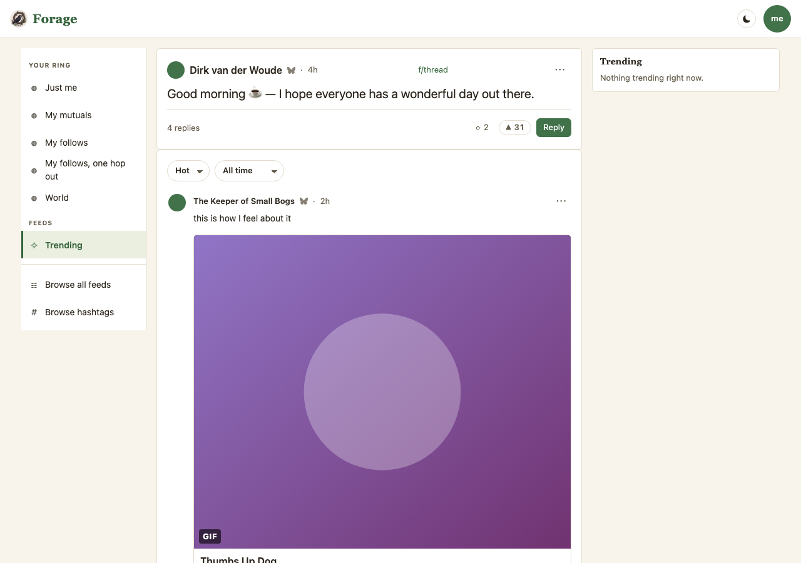
2 · Autoplay off — the overlay you press
This is also what a reader with prefers-reduced-motion gets without
touching anything. Nothing is downloaded in this state: preload="none" and no
src until the press, so a reader who turned autoplay off does not pay the bytes
either. Current has no such state to show — its column is the same still card.

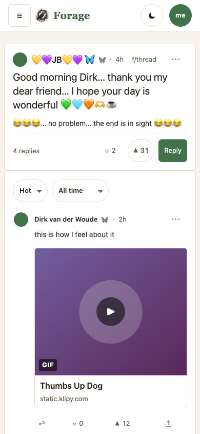

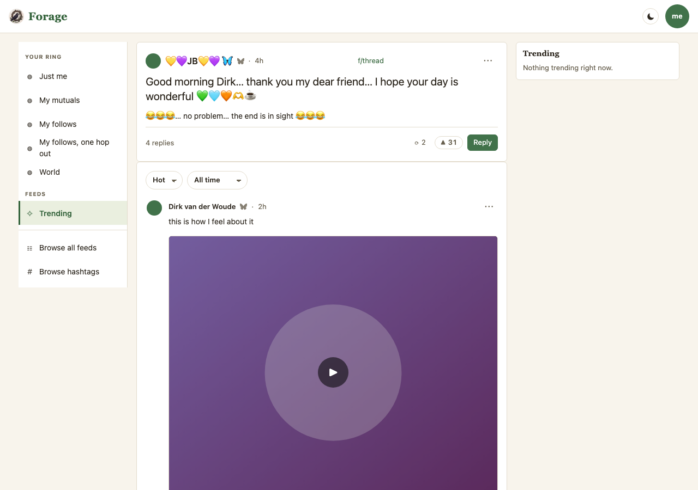
3 · Alt text switched on
The reply in frame carries alt a person actually wrote ("Alt: "),
long enough to wrap — the case the switch is for. Switched on, the
ALT: <title again> duplication comes back on the other cards too; that is the
cost, and the frame has to show it.
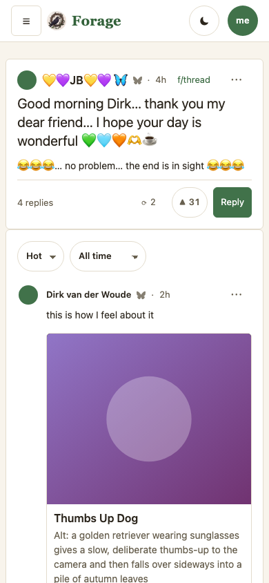
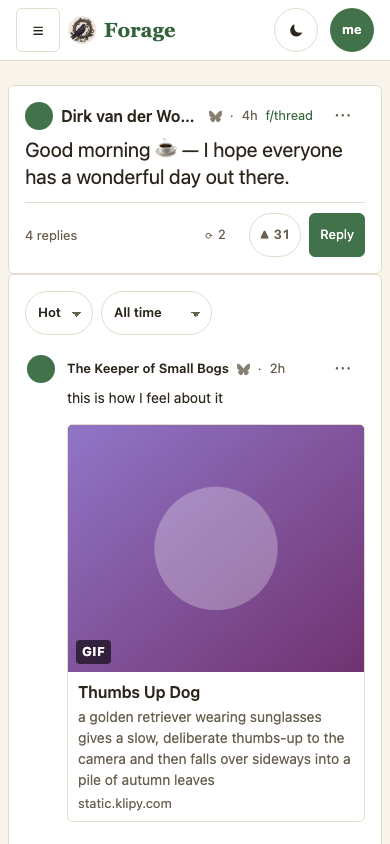
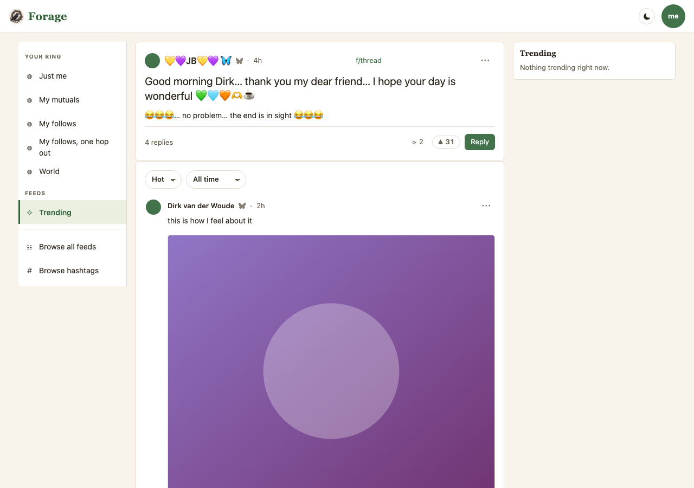

4 · The board, and the control
The same GIFs as feed rows — landscape, portrait, a tenor .gif with
no verified video form, and a 96-character title — with a news card below them. The news
card is the control: its og:description is genuine page content and must be
unaffected by the alt-text setting in either state.
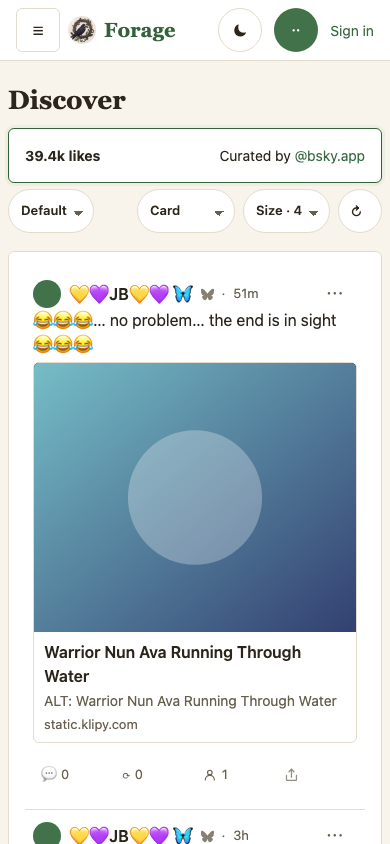
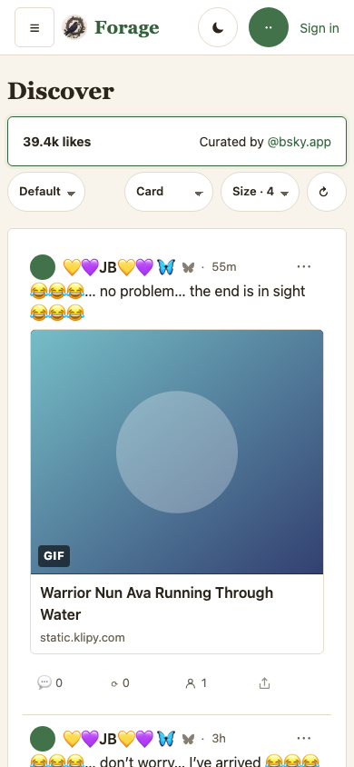
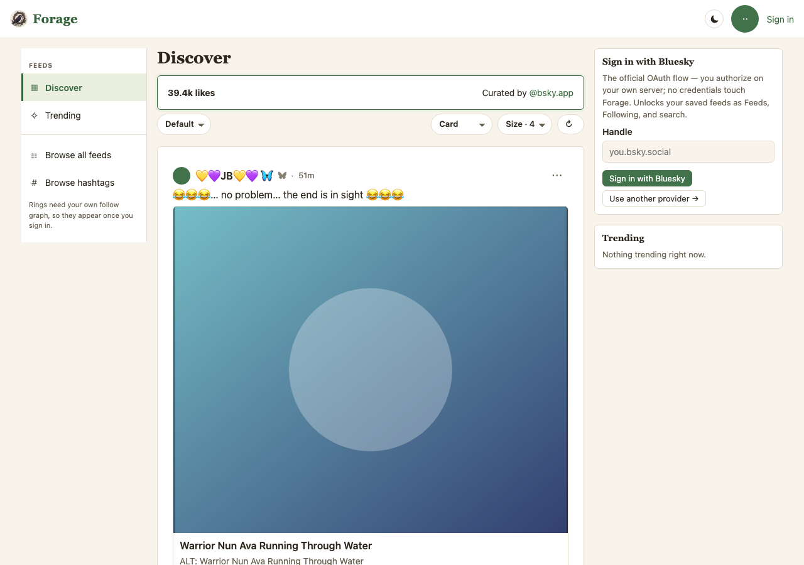
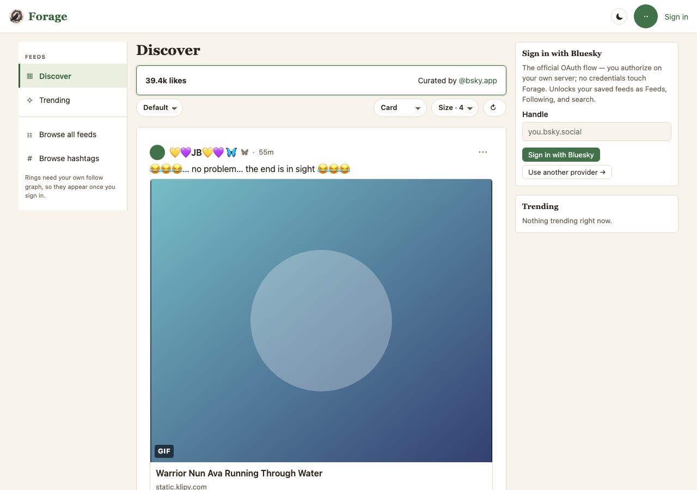
Where it is in the code
| Piece | File | What it decides |
|---|---|---|
| the parser | js/gif.js | Is this uri an animation, and what plays — pure, no network, no DOM. |
| the shape | js/substrates/lens.js mediaOf | kind: 'gif' before the external branch. One door, so a quoted GIF and a reply GIF are the same work. |
| the player | js/ui/stage.js gifStage | <video muted loop playsinline> or <img>, under a full-surface play/pause button. |
| the card | js/ui/lens-views.js gifCard | The player plus the caption that keeps the card's identity. |
| the captions | js/ui/lens-views.js withAltCaption | Alt under a picture, when asked for. Never touches <img alt>. |
| autoplay | js/gif-autoplay.js | Choice > device. An explicit on is written, never left absent. |
| alt text | js/alt-text.js | Hidden until asked for; only the literal on shows it. |
Revisions
| v | Commit | What changed |
|---|---|---|
| 1 | 2dd9bc5 | First publication. Four proposals, eight decisions, eight frames captured from the engine on both sides. |
| 2 | PROPSHA | Decision 7 resolved: tenor probed and built, so the image rung is now giphy and the board's long-title card is a tenor video. Frames re-captured on both sides. (Landed alongside the self-thread embed fix, which is not this mock's subject.) |